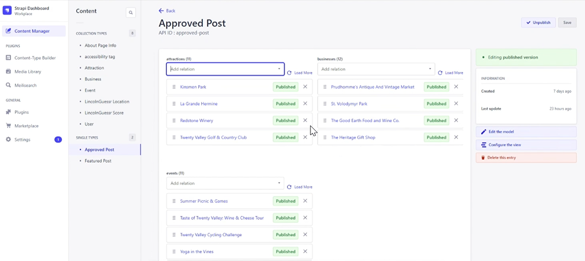
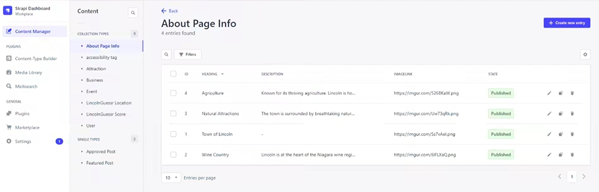

Landing Page
The landing page introduces Discover Lincoln with a clean navigation bar offering quick access to Maps, Events, Attractions, Businesses, and more. The hero section showcases the mission, inviting users to explore Lincoln. Smooth scrolling takes users through featured sections (events, attractions, businesses), each with a carousel of cards containing key details like dates, locations, and descriptions. The Lincoln Guessr section features a leaderboard and play button. The footer includes contact details and social media links.
Map Page
The interactive map of Lincoln, Ontario allows users to explore businesses, attractions, and events. Categories can be filtered, and the search bar provides quick access to specific locations. Clicking an icon opens a pop-up with essential details like date, time, and location, leading to a full details page for further information.
Events Page + Event Details Page
The Events page offers a comprehensive list of upcoming events. Users can filter by type, date, or sort alphabetically. Event cards display images, titles, and locations, with a “Learn More” button leading to detailed event pages that include a photo carousel, event description, organizer details, and accessibility information. A share button allows easy event promotion.
Businesses Page + Business Details Page
The Businesses page lists local businesses with cards featuring images, titles, locations, and hours. Users can search and filter businesses by type or alphabetically. Clicking on a card opens the business details page, which includes photos, descriptions, contact info, and accessibility details like vegetarian options. A share button facilitates easy sharing.
Account Registration + Login Pages
The registration and login pages offer a secure, user-friendly experience, with a scenic Lincoln GIF background. New users register with email, username, and password, and upon logging in, access their dashboard to manage events, attractions, and businesses.
Account Dashboard + Create Pages
The dashboard allows users to create, edit, and delete posts for events, attractions, and businesses. Users fill out a form with key details, upload photos, and submit posts, which appear in the dashboard as “Pending” until approved by an admin through Strapi. Once approved, posts become visible on the respective pages, and users can edit or delete them as needed.
Strapi Integration Breakdown
Strapi CMS served as the backbone of the content management system for Discover Lincoln, managing user-generated content for events, businesses, and attractions. It efficiently structured and scaled content, leveraging relationships between content types to ensure smooth approvals and updates.
Content Management and Data Structures
Strapi managed various content types, including events, businesses, attractions, and about page information. Each content type was structured with flexible data models featuring fields like titles, dates, locations, descriptions, and media, keeping content organized and easy to manage. Relationships between content types—such as linking businesses to events—enhanced navigation and created dynamic content flows.

Content Creation, Approval, and Relationships
Strapi’s relational data structure allowed content types to interconnect, creating a seamless user experience. For example, an event could be linked to a specific business or attraction, enriching content discovery and encouraging users to explore Lincoln’s offerings more deeply through related content.
The approval workflow enabled admins to control what appeared on the site. Community-submitted content, such as events and businesses, was reviewed and approved through Strapi, maintaining quality and keeping the platform user-driven.
Customization and Flexibility
Strapi's Content-Type Builder allowed the addition of custom fields tailored to specific project needs, such as accessibility tags for businesses and events, ensuring inclusivity. This level of customization made the platform adaptable for future requirements without heavy redevelopment.
Media Management
Strapi’s Media Library managed all images and media files for events, attractions, and businesses. This centralized system made uploading, managing, and reusing visuals across the site simple, ensuring consistent presentation. Each image was linked to its relevant content type, such as About Page Info or Attractions, streamlining content management.

Conclusion
Discover Lincoln combines thoughtful UI design with robust front-end
and back-end functionality to create an engaging platform for showcasing
the Town of Lincoln. Using tools like Next.js, Leaflet.js, and Strapi CMS,
the website provides dynamic content management, real-time updates, and
smooth user navigation. The back-end, managed through Strapi, supports
user authentication, content submission, and approval workflows, making
the platform adaptable and scalable.
Extensive testing ensured that the site is fully responsive across both
desktop and mobile. A comprehensive design process from wireframes to
high-fidelity prototypes guided the development of features like the
interactive map, content filtering, and user dashboards. The back-end
setup also facilitated secure data management and content workflows.
This project highlights skills in front-end and back-end development,
UI/UX design, content management, and testing, demonstrating the ability
to build a flexible and scalable platform that can handle future updates
and content growth.